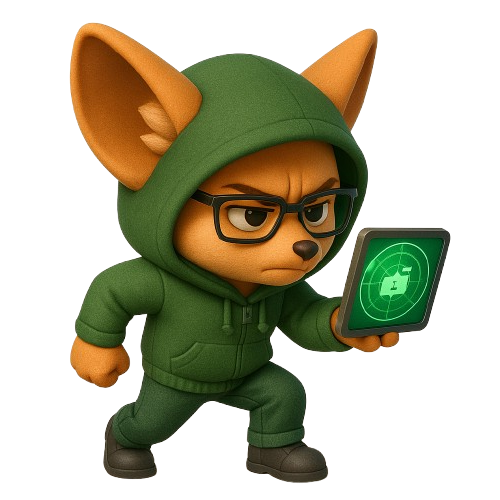

Nos solutions OSINT Web
Nous analysons votre empreinte numérique publique sans interaction directe.
- Analyse de présence : identification des infos publiques liées à votre domaine
- Cartographie numérique : sous-domaines, services accessibles, signaux exposés
- Veille d’indexation : robots.txt, sitemap, pages indexées, erreurs de publication
- Empreinte numérique : éléments visibles en ligne (emails, leaks, mentions, outils tiers)
- Préconisations adaptées : recommandations simples et efficaces


$1